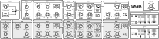

When getting started it's probably best to work with a simplified patch, so here we have a single oscillator path: VCO 1, EXT/Noise + VCO 1 fed to VCF 1 with Cut Off at zero and Resonance at 100%, set to LPF and modulated by EG1+, fed to VCA 1 controlled by EG 2 set to a basic envelope with VCA 1's EG Depth at 50%; don't forget to set Brilliance at 50-100%. Such settings make your CeeS Cntrl changes more evident as you experiment.
CeeS Cntrl, (C) copyright 2026, Lewis Francis
A GUI interface to Tubbutec's CeeS MIDI retrofit for Yamaha CS5, CS10, CS15, CS15D, CS30 and CS30L synthesizers,
adding MIDI input and output as well as additional filter modulation sources. https://tubbutec.de/cees